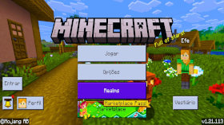

Minecraft
Minecraft é um dos jogos mais aclamados de todos os tempos, apesar de ser lancado inicialmente para PC joguei pelo celular em sua versão "pocket edition" durante muito tempo, bons tempos!
Ano de Lançamento : 2011 (versão mobile)
